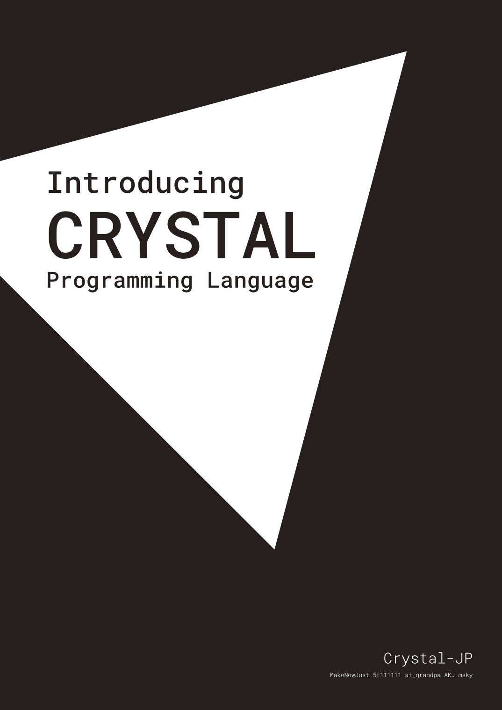

<style>
  .container > header:first-child {
    display: none;
  }
</style>

<section>
  <h2>Introducing Crystal Programming Language</h2>
</section>

<section>
  
</section>

<section>
  <h3>概要</h3>

  <p>『Introducing Crystal Programming Language』はプログラミング言語 Crystal の初心者〜中級者向け解説書です。 Crystal の基本的な文法から Web アプリーケション・ CLI 開発の方法まで解説したこの一冊があれば、Crystal での開発を今日から初めることができるでしょう。</p>
</section>

<section>
  <h3>目次</h3>

  <ol>
    <li><a href="chapters/01-introduction.html">はじめに</a></li>
    <li><a href="chapters/02-getting-started.html">Getting Started</a></li>
    <li><a href="chapters/03-syntax.html">構文</a></li>
    <li><a href="chapters/04-macro.html">マクロ</a></li>
    <li><a href="chapters/05-shards.html">Shards</a></li>
    <li><a href="chapters/06-web-development.html">Web 開発</a></li>
    <li><a href="chapters/07-cli-development.html">CLI 開発</a></li>
  </ol>
</section>

<section>
  <h3>作者</h3>

  <p>Crystal-JP（5t111111・AKJ・@at_grandpa・MakeNowJust・msky）<p>

  <p>Crystal-JP はプログラミング言語 Crystal の日本語ユーザーグループです。Crystal の普及のため、イベント開催や同人誌の執筆、 Slack のワークスペースの運営などの活動しています。</p>
</section>
